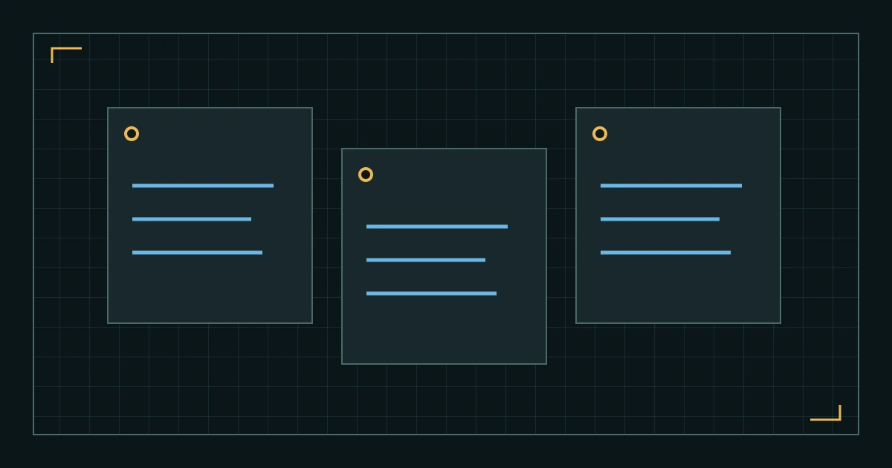

%%T5_EYEBROW%%
%%T5_TITLE%%
%%T5_SUMMARY%%
本页线路
%%T5_H2_1%%
%%T5_TEXT_1%%
%%T5_NOTE_1_QUOTE%%
%%T5_NOTE_2_QUOTE%%
%%T5_NOTE_3_QUOTE%%
%%T5_H2_2%%
%%T5_TEXT_2%%
- %%T5_POINT_1%%
- %%T5_POINT_2%%
- %%T5_POINT_3%%
%%T5_H2_3%%
%%T5_TEXT_3%%
%%T5_QUOTE%%
%%T5_QUOTE_CITE%%
%%T5_H2_4%%
%%T5_TEXT_4%%
%%T5_FAQ_LABEL%%
%%T5_FAQ_Q_1%%
%%T5_FAQ_A_1%%
%%T5_FAQ_Q_2%%
%%T5_FAQ_A_2%%
%%T5_FAQ_Q_3%%
%%T5_FAQ_A_3%%
%%T5_SOURCES_LABEL%%
%%AUTHOR_BIO%%
- %%T5_SOURCE_TITLE_1%%
%%T5_SOURCE_NOTE_1%%
- %%T5_SOURCE_TITLE_2%%
%%T5_SOURCE_NOTE_2%%